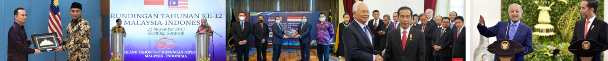

- Kemanusiaan yang Adil dan Beradab
Kerja sama dalam bidang sosial, seperti melalui UNHCR dan UNICEF, mencerminkan nilai kemanusiaan. Indonesia ikut membantu orang-orang yang membutuhkan, baik anak-anak maupun masyarakat yang terkena dampak konflik atau bencana.
- Persatuan Indonesia
Dalam kerja sama regional, seperti melalui ASEAN, Indonesia menunjukkan rasa persatuan dengan negara-negara tetangga untuk menjaga stabilitas dan keamanan kawasan. Hal ini memperkuat peran Indonesia dalam membangun kerja sama yang harmonis.
- Keadilan Sosial bagi Seluruh Rakyat Indonesia
Melalui kerja sama bilateral, seperti bidang ekonomi dengan Malaysia, Indonesia berusaha meningkatkan kesejahteraan rakyatnya, misalnya lewat perdagangan kelapa sawit dan peningkatan kualitas pendidikan. Tujuannya adalah memberikan manfaat yang adil bagi semua rakyat.
